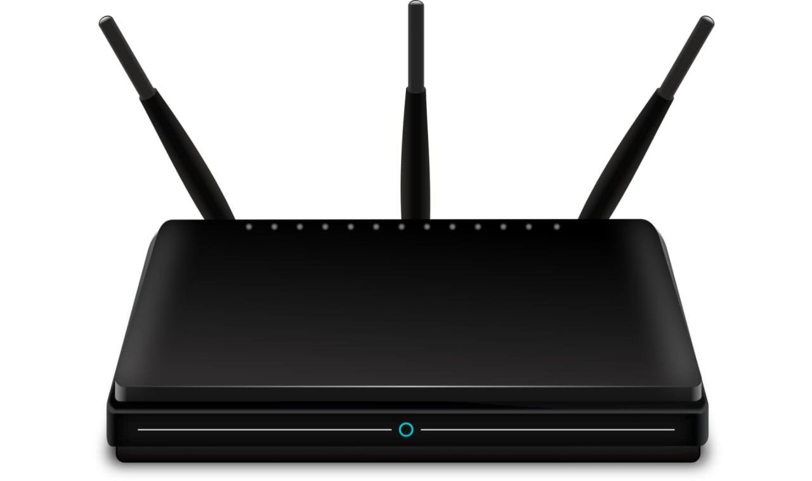

🛠️
Réparation de PC
Ordinateur lent, écran bleu, ne démarre plus ? On diagnostique et on répare — sans vous vendre ce dont vous n'avez pas besoin.
Réparation, installation et débogage de PC, plus une assistance à distance quand vous en avez besoin. 40 ans d'expérience, service honnête, rapide et sans jargon inutile. On se déplace à Nicolet, Trois-Rivières et Bécancour (rayon 50 km).
Un seul interlocuteur pour tous vos problèmes de PC — du plus simple au plus tordu.
Ordinateur lent, écran bleu, ne démarre plus ? On diagnostique et on répare — sans vous vendre ce dont vous n'avez pas besoin.

Nouveau poste, Windows, imprimante, réseau Wi-Fi, sauvegarde : on installe et on configure proprement du premier coup.
Plantages, logiciels qui coincent, infections malware : on nettoie, on stabilise et on sécurise votre système.
Un problème rapide ? On vous prend la main via une connexion chiffrée (outil X-Remote), sans laisser de logiciel résiduel. Souvent résolu en quelques minutes, sans déplacement.

Site vitrine ou institutionnel, rapide et professionnel. Hébergement et nom de domaine configurés, avec bases de référencement local (Google Business, mots-clés région).

Outils sur mesure, applications de gestion ou utilitaires. De l'idée au livrable fonctionnel, adapté à votre réalité.

Configuration WiFi, imprimante et partage. Sauvegarde automatique de vos données pour ne jamais tout perdre.

30 minutes de formation anti-stress pour prendre en main votre PC en confiance. Patience et pédagogie, sans jargon.
40 ans d'expérience en dépannage informatique. J'ai fondé AIP pour offrir un service honnête et accessible à Nicolet, Trois-Rivières et Bécancour. Réparation, installation, débogage et assistance à distance — je m'occupe de tout, vous reprenez le contrôle.
Spécialisation : ordinateurs fixes et portables (Windows et macOS).
Service écoresponsable : on prolonge la vie de votre matériel plutôt que de le remplacer. Réparation, optimisation et sauvegarde plutôt que l'achat neuf.
Note de 5.0★ sur Google, basée sur 7 avis clients : c'est ça, l'engagement AIP.
« Service impeccable. J'ai jamais vu quelqu'un d'autant serviable et professionnel en informatique. Je recommande fortement ses services, il est expert dans son domaine. »
« Un gros problème de micro, j'ai gossé dessus pendant 2 mois, il a trouvé le problème en 10 min. Super beau service, très professionnel. »
« Service impeccable à l'Atelier Informatique Potvin ! Travail rapide, professionnel et honnête. »
« Service dépannage au top. Facile de rejoindre M. Potvin, service hors pair avec un langage clair et de l'humour. Merci. »
« Service haut de gamme et courtois. Je recommande énormément, que vous soyez familier ou pas avec les ordinateurs, il saura vous rassurer. »
« Service rapide et impeccable. »
« Notre petite entreprise avait des problèmes de réseau. Patrick a tout réglé en une visite, et nous a même formés pour éviter les problèmes futurs. Professionnel et efficace. »
Pas de promesse vague. Voici des interventions réelles avec leur impact mesuré.
Peu d'ateliers locaux peuvent le dire : nos propres logiciels, pensés pour le terrain.
Assistance à distance sécurisée, développée en maison. Connexion chiffrée, sans logiciel résiduel.
Outil de lecture et d'édition PDF souverain, avec OCR et signature numérique certifiée.
Scripts et utilitaires maison pour trouver la cause réelle d'un problème, pas juste le symptôme.
Outils qui accélèrent le dépannage récurrent : sauvegarde, transfert et configuration en un clic.
Les prix exacts sont confirmés après diagnostic. Voici les bases.
Évaluation complète et soumission claire (gratuit si réparation effectuée).
Par session (jusqu'à 45 min), problèmes courants résolus sans déplacement.
Réparation, optimisation et configuration en atelier ou à domicile.
Devis sur mesure selon le nombre de pages et les fonctionnalités intégrées.
Antivirus + sauvegarde automatique + optimisation. Bundle préventif pour un PC fiable.
Appelez directement ou écrivez — on revient vers vous rapidement.
Laissez vos coordonnées, on vous rappelle.
Ou écrivez directement à contact@atelierpotvin.ca / appelez au 819 380-2999.